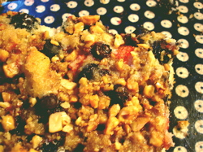
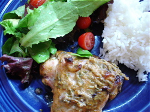

Mom copies Creampuff, and makes some chicken
First of all, I want to tip my hat to Ivonne of Creampuffs in Venice for the wonderful dessert I served to my guests last night, Berry Streusel Cake. Ivonne calls it Triple Berry Coffeecake and to prove that it does in fact make a good breakfast cake I ate a huge piece this morning with my coffee. But last night I omitted the word “coffee” from the name, served it up for dessert and no one was any the wiser. A couple of notes if you’re following the recipe from Ivonne’s website; she used macadamia nuts because she had some on hand. I used walnuts and toasted them first, then chopped them finely. I was able to use my self-rising flour quite successfully in this recipe but I did add the baking soda since the recipe uses buttermilk. But speaking of buttermilk, I was out of it. I had about 1/3 of a cup of plain yogurt, so put that in a cup and added milk to come up to the 1/2 cup mark; it worked out fine. I know you can substitute milk soured with vinegar or lemon juice but I think yogurt is better if you have some; I would even have used vanilla or lemon yogurt in preference to soured milk.

This cake was so delicious that although I only had a small piece after dinner “Just a tiny slice for me, thanks!” I ate 2 more hunks of it in bed where I was reading my book after my husband went to sleep. Not entirely in accordance with my goal to become very skinny this summer. BTW, I only had two kinds of berries, blueberries and strawberries, so it was Double Berry Streusel Cake.
The second recipe I want to pass on is sort of an oven version of the Indian-Style Grilled Chicken that I posted about a month or so ago. I got it out of Donna Hay’s Off the Shelf, Cooking From the Pantry cookbook that the guys gave me for mother’s day and it was really easy. I’m going to copy the recipe as written, but I adjusted it down a little because I only made 4 chicken thighs. Ms. Hay doesn’t say whether to remove the skin or not, but I did and the meat remained quite moist and juicy, although of course I was using the thighs.
Harissa and Yogurt Baked Chicken

- 1 chicken, quartered, or equivalent legs, thighs, or mixed pieces
- 1 tablespoon cornstarch
- 1 cup thick yogurt (I used Brown Cow cream top yogurt)
- 1/3 cup shredded mint (I used chopped cilantro)
- 1 tablespoon harissa or chili paste (I used Thai roasted red chili paste)
- 2 teaspoons ground cumin (I’m just seeing this now and forgot to put it in)
- cracked pepper and sea salt (I think sea salt is silly and use any old salt)
Preheat oven to 400º. Make deep slits all over the chicken pieces. Blend together remaining ingredients and spread all over chicken, or roll the chicken in the bowl in which you have blended them (that’s what I did). Place the chicken on a rack in baking dish and bake for 35-45 minutes until done. Serve warm or cold with a squeeze of lemon or lime. I didn’t use a rack, and make sure you scrape all the yogurt over the chicken before baking and scrape all the drippings out of the pan onto the chicken when it’s done because they are delicious. We call them the naughty bits.
Comments
Blueberries and strawberries, yum!
I like that part about eating cake in bed while reading a book. That’s my idea of a good time.
This all looks sooo good. I have been so tired of chicken-haven’t made it for a while, but I think I need to try this. I had been admiring Ivonne’s cake too-looks marvelous.
Eating and reading in bed is way up there. I tend to get a little too much interest from the cats when I do this however, and fending them off while trying to read and eat gets to be a little much. For some reason I can accomplish this set of activites better on the sofa.
The drawback is, of course, that when I’m done eating and reading, and all sleepy, I have to get up to crawl to bed, instead of just turning off the light.
Oh, well done Rebecca!
I love how you made the recipe your own and looks fantastic.
But let’s talk about that chicken … wow! Wish I had been over for dinner!
oh, you “tiny slice” people! always you come back to have another piece. I certainly would, myself, it looks too delicious to pass up!
Add a comment